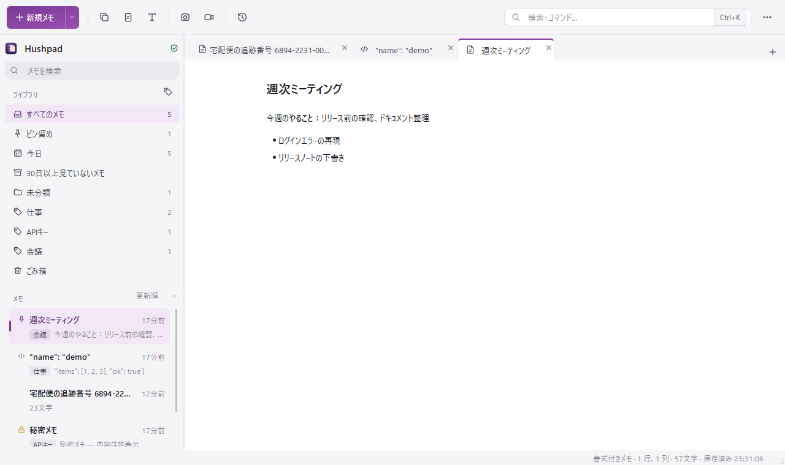
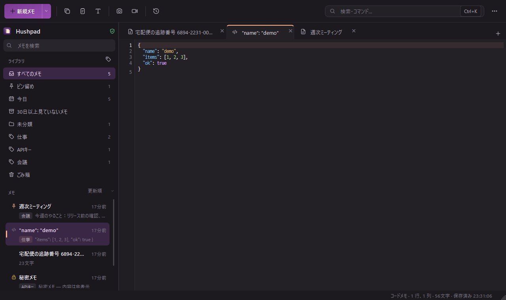

静かに書いて、誰にも見せない
保存ボタンを押さなくても書いたそばから記録され、すべてのメモは暗号化されてひとつのフォルダーにまとまります。ウィンドウはスクリーンショットにも画面共有にも映りません。パスワード、API キー、HTML、JSON、スクリーンショットまで、ひとつの場所に。


メモ帳をこんなふうに使っているなら
保存しなくても残るタブは便利。でも、増えはじめると話は別です。
軽くて、必要なものだけ
Windows のメモ帳と同じようにすぐ書けて、メモ帳にはできなかったことを静かにこなします。
保存ボタンはありません
書いた瞬間に自動保存。名前を付けなくても作成日時で整理され、すべてのメモがひとつのフォルダーに集まります。
すべてのメモを暗号化
ファイルを開いても中身は読めません。ほかのアプリや検索インデックス、クラウドも内容を読み取れません。
キャプチャに映らないウィンドウ
スクリーンショット、画面録画、ビデオ会議の画面共有に Hushpad のウィンドウは映りません。見えるのは自分の画面だけです。
書式そのまま、または文字だけ
Web からコピーした文章は書式ごと貼り付け、ほかの場所へ移すときは Ctrl+Shift+C で文字だけをコピー。書式付きメモは、文字だけの版もいつも一緒に保存しています。
HTML・JSON もさっと
コードメモには行番号・色分け・自動インデントがあり、JSON もすぐに整形できます。KEY=値 の行から値だけをコピーすることもできます。
スクリーンショット・短い録画
どこからでも Ctrl+Alt+S で範囲キャプチャ、Ctrl+Alt+R で画面録画。結果はそのままメモに入り、動画も暗号化されます。
分類・結合・ごみ箱
ドラッグで分類し、複数のメモをひとつに結合。削除したメモはごみ箱から元に戻せます。しばらく開いていないメモだけを集めて整理することもできます。
自分の複数の PC で
保管フォルダーを Dropbox や OneDrive の中に置けば、同じパスワードでほかの PC からも開けます。メモ 1 件が 1 ファイルなので、競合も起きにくくなっています。
Ctrl+K ひとつで
メモのタイトル・本文とすべての機能を、ひとつの入力欄から探して Enter で実行。クリップボードをそのままメモとして保存する Ctrl+Alt+M もあります。
自分の画面には見えて、キャプチャには映らない
画面共有中にメモを開いたままでも、スクリーンショットを撮っても、Hushpad のウィンドウがあった場所には、その後ろの画面が映ります。だからウィンドウをどけずに、そのままキャプチャして大丈夫です。
- スクリーンショット・録画ツール、ビデオ会議の共有Windows ではシステムのキャプチャ除外機能（Windows 10 バージョン 2004 以降）、macOS ではウィンドウの共有をオフにする設定を使います。
- 録画中のボタンも映りません録画範囲の枠と ⏸・⏹ バーは、自分の画面にだけ表示されます。
- 必要ならオフにできますメモをあえて画面共有したいときは、メニューからすぐに解除できます。
メモを守るしくみ
Hushpad にはサーバーがありません。メモは自分で選んだフォルダーにだけあり、その中のファイルはすべて暗号化されています。
- AES-256-GCM 暗号化メモ、過去のバージョン、動画、分類名まですべて暗号化して保存します。録画中だけ一時ファイルができ、終わるとすぐに削除します。
- パスワードから作る鍵（scrypt）パスワードを知らなければファイルは復号できません。パスワードを忘れると、開発者でも復元できません。
- 自分の PC では入力は一度だけ鍵は、Windows ではアカウント（DPAPI）に結び付けて、macOS ではログインキーチェーンに記憶します。別のアカウントや別の PC では、あらためてパスワードが必要です。
- クリップボードも静かにコピーした内容は、Windows のクリップボード履歴やクラウド同期に残らないよう指定します。
- アカウント・追跡・インターネット接続なしアプリもこのサイトも、アクセス解析や広告のスクリプトを使っていません。
├─ vault.json — パスワードで包んだ鍵
├─ notes\
│ ├─ 20261115-143205-a1b2.own
│ └─ 20261115-151740-9c0e.own
├─ history\ — 以前のバージョン
└─ media\ — 録画した動画
$ type notes\20261115-143205-a1b2.own
OWN1 ▒▓░▒█▓░▒▓▒░█▓▒░▓█▒░▒▓█░▒▓░█▒▓
# 開いても、こう見えるだけ
手になじむショートカット
ウィンドウを閉じていても（トレイ、Mac ではメニューバーに常駐中）使えるショートカットがあります。Mac では Ctrl+Alt の代わりに ⌃⌥（Control+Option）、アプリ内では Ctrl の代わりに ⌘ を使います。
よくある質問
どこで入手できますか？
このサイトのダウンロードページから入手できます。ファイルは GitHub のリリースで配布しており、Windows 10・11（64 ビット）用と、Apple シリコン搭載 Mac（M1 以降）用の 2 種類があります。Intel プロセッサ搭載の Mac には対応していません。
無料ですか？オープンソースですか？
どちらも「はい」です。Hushpad は無料で、ソースコードは GPL-3.0-or-later のもと GitHub で公開しています。誰でもソースを読み、改変し、再配布できます。ただし改変版を配布する場合は、同じライセンスでソースを公開し、Hushpad とは別の名前とアイコンを使う必要があります。
Windows のメモ帳で開いているタブを移せますか？
はい。Windows 版のメニュー › ファイル ›「Windows メモ帳のタブを取り込む」で、保存していないタブまでコピーできます。Windows のメモ帳側には手を加えません。
パスワードを忘れたらどうなりますか？
復元する方法はありません。パスワードを知らなければ誰にも（開発者にも）開けないように作られているためです。最初に設定するときに、安全な場所に書き留めておいてください。
PC を再起動してもメモは残りますか？
はい。メモは書いたそばから暗号化してディスクに保存するので、再起動してもそのまま残ります。初回起動のあとは、Windows の起動時（Mac ではログイン時）に Hushpad がトレイ（Mac ではメニューバー）で自動的に起動します。不要なら、トレイのアイコンのメニューか［セキュリティ］メニューでオフにできます。
複数の PC で使うには？
保管フォルダーを Dropbox や OneDrive などの同期フォルダーの中に置き、別の PC で同じフォルダーを選んで同じパスワードを入力するだけです。別の PC での変更は数秒で反映され、両方で同時に編集した場合は片方を「競合コピー」として別に残します。
画像や動画も入れられますか？
書式付きメモには画像を貼り付けたりドラッグ＆ドロップしたりでき、スクリーンショットや短い画面録画（最大 3 分）もそのまま入ります。動画はアプリ内で再生でき、暗号化して保存されます。
インターネットに何か送信しますか？
いいえ。Hushpad にはアカウントもサーバーもなく、実行中にインターネットへ接続することはありません。
Mac でもキャプチャに映りませんか？
macOS では、ウィンドウの共有をオフにする設定で隠します。ただし macOS 15 以降では、ScreenCaptureKit を使う一部のキャプチャ・画面共有アプリがこの設定を無視し、ウィンドウを撮影できる場合があります。Mac では、画面を共有する前に一度確かめてください。
アプリの表示言語は変えられますか？
日本語・英語・韓国語・簡体字中国語に対応し、最初はシステムの言語で起動します。メニュー（⋯）›［表示］›［言語］でいつでも切り替えられます。